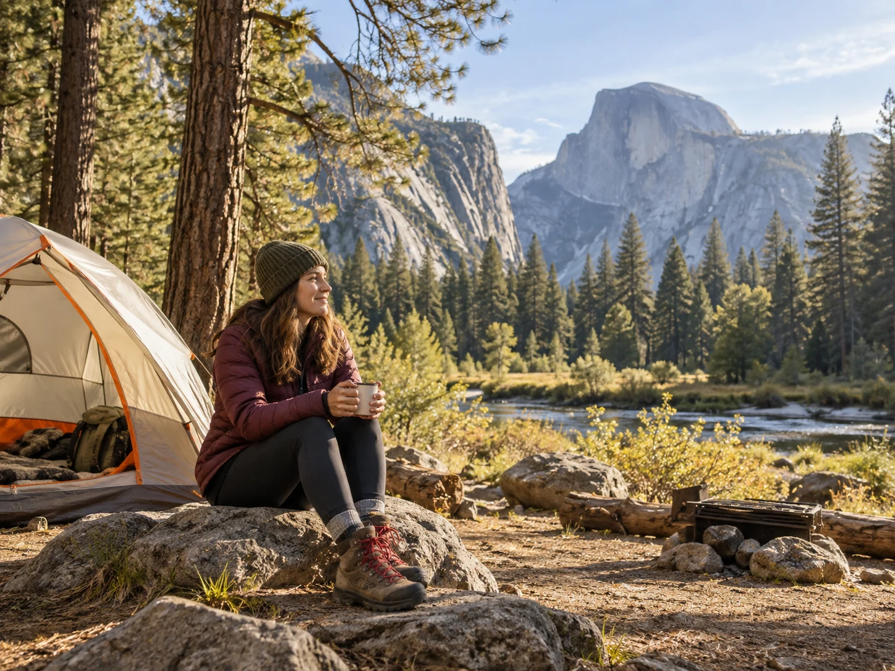
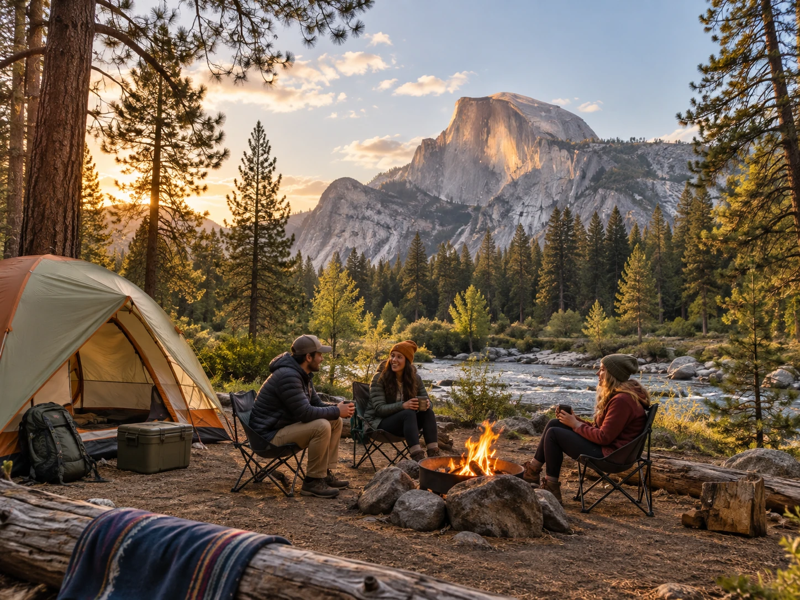

Upper Pines is the easiest first answer
Upper Pines is in Yosemite Valley, close to major viewpoints, trails, shuttle stops, and the classic Valley experience. It is also open all year, which makes it one of the most flexible campground choices in the park.
The downside is demand. Yosemite campground reservations can disappear very quickly, so a great campground is only useful if you understand the reservation window.
Lower Pines and North Pines feel even closer to the Valley
Lower Pines and North Pines are seasonal Valley campgrounds with excellent access to the Merced River, Half Dome views, and the same core Valley attractions. They are strong choices when you want to park once and spend more time exploring nearby.
Sites can feel close together, so this is more about location than solitude.

Tuolumne Meadows is for a different Yosemite
Tuolumne Meadows sits much higher and gives you access to granite domes, alpine meadows, cooler nights, and high country trails. It feels very different from the Valley and is a great choice for hikers who want that part of the park to be the focus.
The season is shorter because snow controls when the high country roads and facilities can open.
Reservations are the real challenge
For 2026, the National Park Service says campground reservations are required for all campgrounds from roughly April through October. Many popular sites are released months in advance and can sell out within minutes.
Have a Recreation.gov account ready, know the release date for the campground you want, and keep checking for cancellations. Some inventory is also released on shorter windows depending on the campground.
Do not confuse camping reservations with park entry
Yosemite does not require a vehicle entrance reservation in 2026, but that does not mean you can sleep in the park without a campground reservation. Overnight camping rules are separate.
If you cannot get a campsite inside the park, look at legal lodging or campgrounds outside the entrances and plan for the extra driving time.